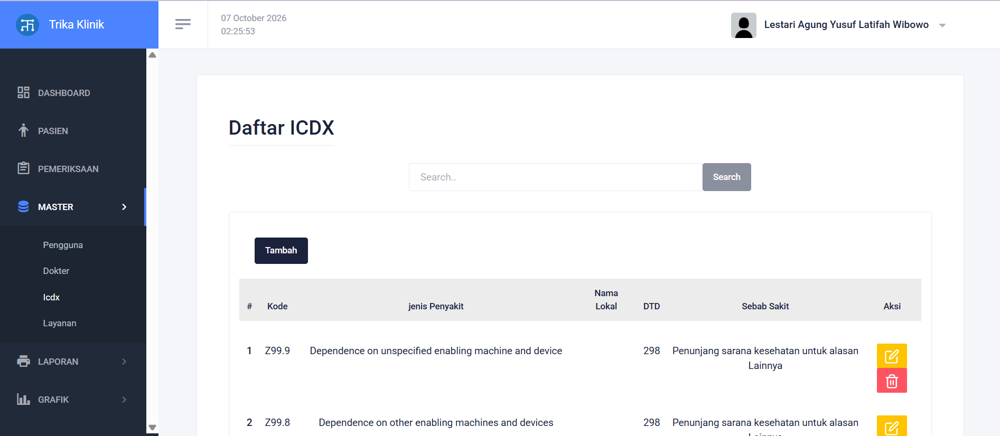

Project 01
SMK Learning Project · Fullstack Web
Web Klinik Sederhana
Aplikasi manajemen klinik sederhana yang dibangun saat belajar web development di SMK. Mengimplementasikan autentikasi dokter dan pasien, pencatatan rekam medis, dan pengelolaan data berorientasi arsitektur MVC.
Laravel Fullstack
PHP
MySQL
Blade
Completed SMK Portfolio

CLICK TO VIEW